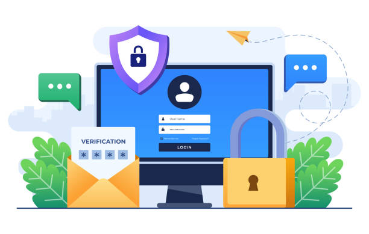

|
¡Hola! Bienvenido a mi espacio dedicado a la ciberseguridad. Aquí encontrarás información práctica, consejos y herramientas que uso para proteger mis datos, dispositivos y privacidad en internet. La ciberseguridad, también conocida como seguridad digital, es la práctica de proteger sistemas, redes, datos y dispositivos contra ataques cibernéticos. Quiero compartir contigo lo que he aprendido sobre las amenazas digitales más comunes y cómo defendernos de ellas de manera sencilla y efectiva. En esta página podrás explorar temas como protección contra virus, seguridad en redes sociales, manejo de contraseñas y mucho más. Mi objetivo es que juntos aprendamos a navegar seguros en el mundo digital, porque la ciberseguridad es algo que nos afecta a todos. ¡Gracias por visitar y espero que te sea útil! |